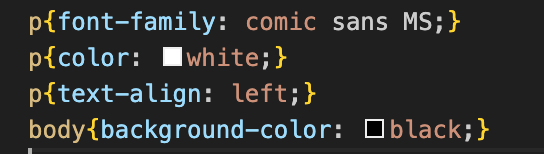
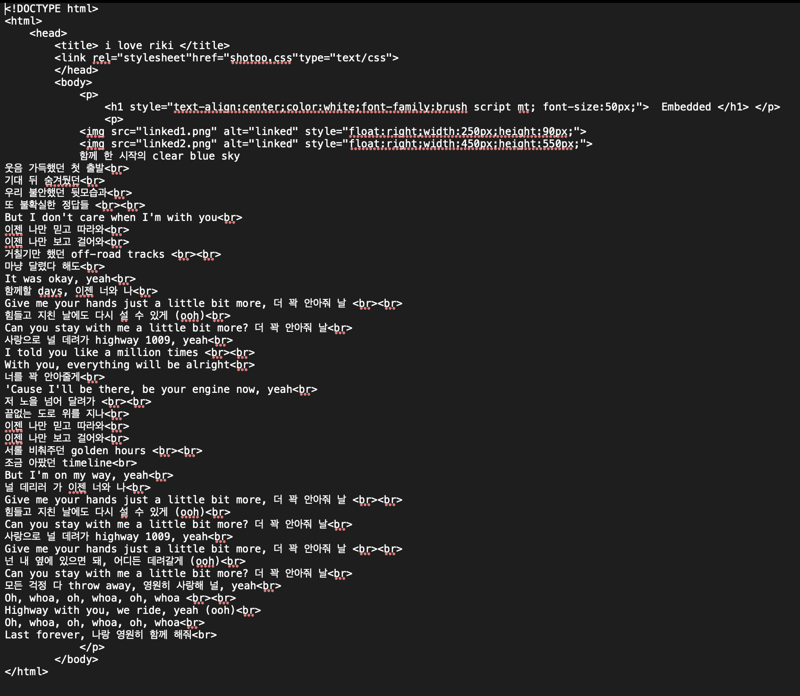

함께 한 시작의 clear blue sky
웃음 가득했던 첫 출발
기대 뒤 숨겨뒀던
우리 불안했던 뒷모습과
또 불확실한 정답들
But I don't care when I'm with you
이젠 나만 믿고 따라와
이젠 나만 보고 걸어와
거칠기만 했던 off-road tracks
마냥 달렸다 해도
It was okay, yeah
함께할 days, 이젠 너와 나
Give me your hands just a little bit more, 더 꽉 안아줘 날
힘들고 지친 날에도 다시 설 수 있게 (ooh)
Can you stay with me a little bit more? 더 꽉 안아줘 날
사랑으로 널 데려가 highway 1009, yeah
I told you like a million times
With you, everything will be alright
너를 꽉 안아줄게
'Cause I'll be there, be your engine now, yeah
저 노을 넘어 달려가
끝없는 도로 위를 지나
이젠 나만 믿고 따라와
이젠 나만 보고 걸어와
서롤 비춰주던 golden hours
조금 아팠던 timeline
But I'm on my way, yeah
널 데리러 가 이젠 너와 나
Give me your hands just a little bit more, 더 꽉 안아줘 날
힘들고 지친 날에도 다시 설 수 있게 (ooh)
Can you stay with me a little bit more? 더 꽉 안아줘 날
사랑으로 널 데려가 highway 1009, yeah
Give me your hands just a little bit more, 더 꽉 안아줘 날
넌 내 옆에 있으면 돼, 어디든 데려갈게 (ooh)
Can you stay with mе a little bit more? 더 꽉 안아줘 날
모든 걱정 다 throw away, 영원히 사랑해 널, yeah
Oh, whoa, oh, whoa, oh, whoa
Highway with you, wе ride, yeah (ooh)
Oh, whoa, oh, whoa, oh, whoa
Last forever, 나랑 영원히 함께 해줘